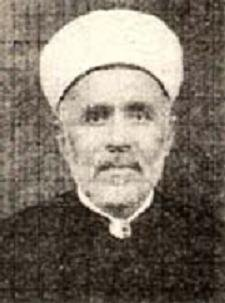

Mehmed Zahid Kevserî (1879–1951)

Son dönem Osmanlý alimlerindendir. Kafkasya’dan göç edip Düzce’ye yerleþen bir aileye mensuptur. Medrese eðitimini tamamladýktan sonra muhtelif medreselerde müderrislik yapmýþ ve Þeyhülislamýn ders vekilliðine kadar yükselmiþtir. Zamanýnýn büyük bir bölümünü ilme adamýþ, çok sayýda talebe yetiþtirdiði gibi bir çok eser de kaleme almýþtýr. Dinde reform adý altýnda yapýlan saldýrýlara karþý makale yazmak suretiyle cevap vermeye çalýþmýþtýr. Risale-i Nur’un neþir zamanlarýnda Mýsýr’da bulunmaktadýr. Bediüzzaman’ýn, eserlerinin korunmasý ve Arapça’ya tercüme edilmeleri hususunda vekalet verdiði kiþiler arasýnda ismi zikredilmiþtir.Mehmed Zahid, 1879 yýlýnda Düzce’nin Hacý Hasan Efendi (Çalýcuma) köyünde doðdu. Köy, adýný alim bir zat olan ve Kafkasya’dan göç edip buraya yerleþen babasý Hüseyin Efendiden aldý. Hüseyin Efendi buraya göç edip medrese açtý ve talebe yetiþtirmeye baþladý. Yöre halký tarafýndan da ilim ve þahsiyetine hürmeten köylerine adý verildi ve bundan sonra köy bu isimle anýlmaya baþlandý.
Mehmed Zahid ilk eðitimine Düzce’de baþladý. Ýlk derslerini babasýndan aldý. Düzce’de bulunan iptidaiye ve rüþdiye mekteplerinde okudu. Mehmed Nazým Efendiden tarih, coðrafya ve matematik derslerini aldý. Buradaki eðitimini tamamladýktan sonra Ýstanbul’a gitti. Fatih Camii Medresesine giderek burada eðitime baþladý. Eðinli Ýbrahim Hakký Efendinin derslerini takip ederek medrese eðitimini sürdürdü. Bunun dýþýnda Alasonyalý Ali Zeynelabidin Efendiden ders aldý. Ders aldýðý hocalarýndan biri de Kastamonulu Þeyh Hüseyin Efendidir.
Medrese eðitimini tamamlayan Mehmed Zahid Efendi, 1907 yýlýndan itibaren Fatih Camiinde müderrislik yapmaya baþladý. Bu görevini Birinci Dünya Savaþýnýn baþlamasýna kadar sürdürdü. Medreselerde eðitim verirken belagat, mantýk ve aruz derslerini okuttu. Bu sýralarda Kastamonu’da yeni bir medrese açýldý. Yeni medreseyi faaliyete geçirme görevi kendisine tevdi edildi. Bu yeni görevi için Kastamonu’ya giderek çalýþmaya baþladý. Üç yýl kadar hizmet gördükten sonra tekrar Ýstanbul’a geri döndü.
Mehmed Zahid Efendi Ýstanbul’a geldikten sonra yeni görevlerde bulundu. Ýlk önce Darüþþafaka’da müderrislik yaptý. Kýsa bir süre sonra alanýnda uzman yetiþtiren Medresetü’l-Mütehassisin’de müderrislik yapmaya devam etti. Bu görevlerinin dýþýnda Þeyhülislam Mustafa Sabri Efendinin ders vekilliðinde de bulundu. Bayezid Medresesinde Þeyhülislamlar tarafýndan ders verilirdi. Þeyhülislamlarýn ders vekilleri ise yüksek dereceli müderrisler arasýndan seçilir ve vekaleten ders okuturlardý. Bu ayný zamanda bir unvan ve memuriyete de tekabül etmekte olup, Osmanlýnýn son zamanlarýna kadar devam etti. Ayrýca Meþihat Müsteþarlýðý görevinde de bulundu.
Mehmed Zahid Efendi, 1922 yýlýnda Ýstanbul’dan ayrýlarak Mýsýr’a göçtü. Önce Kahire’ye yerleþtiyse de kýsa bir zaman sonra Þam’a gitti. Bir süre Þam’da kaldýktan tekrar Kahire’ye döndü. Bu ikinci geliþten sonra ailesini de yanýna alarak Kahire’ye yerleþti. Burada da talebe yetiþtirmeye ve ilim irfanla uðraþmaya devam ederek Mýsýr’ýn önemli alimleri arasýnda yer aldý.
Mehmed Zahid Efendi, zamanýnýn önemli bir kýsmýný ilme hasretti. Baþta hadis, fýkýh, tefsir olmak üzere muhtelif ilimlerle uðraþarak deðerli hizmetlerde bulundu. Çok sayýda talebe yetiþtirdiði gibi bir çok eser de yazdý. Türkiye’de bulunduðu süre zarfýnda, talebe yetiþtirmeye daha fazla zaman ayýrdýðýndan, Mýsýr’a oranla burada çok daha fazla talebe yetiþtirdi. Mýsýr’da bulunduðu zamanlarda ise önceliði ilmi araþtýrma ve eser yazmaya verdi. Dolayýsýyla daha az talebe yetiþtirmiþ oldu.
Mýsýr kütüphanelerinde Türkçe olarak yazýlmýþ eserler üzerinde inceleme ve araþtýrmalarda bulunan Mehmed Zahid Efendi, bir çok vesikayý gün ýþýðýna çýkararak istifadeye sundu. Özellikle dinde reform iddiasýyla ortaya çýkan ve Ýslamî deðerlere saldýran kiþilerle ilmi mücadelede bulundu. Bunlarýn iddialarýný makale ve eserleriyle çürütmeye çalýþtý. Söz konusu kiþiler onun bulunduðu ortamlarda konuþamaz duruma geldiler. Ömrünü ilme adayan Osmanlýnýn son dönem önemli alimleri arasýnda yer alan, çok sayýda talebe yetiþtirip eser yazan Mehmed Zahid Efendi, 11 Aðustos 1951 tarihinde Kahire’de vefat etti. Naþý Ýmam-ý Þafii hazretlerinin kabrinin yanýna defnedildi. Mezar taþýna kendisi için yazdýðý þu þiiri hak edildi.
Ey kabrimin baþýnda durup ibretle bakan adam,
Dünkü ziyaretçi bugün buraya defn olunmuþtur.
…
Bediüzzaman, Mýsýr’da bulunan zamanýn önemli alimleri ile haberleþmelerinde Risale-i Nur’a sahip çýkýlmasýný, kendi bedeline eserlerinin hamiliðini yapmalarýný isim belirterek istemiþtir. Mýsýr’ýn önemli alimleri arasýnda saydýðý ve aralarýnda Mehmed Zahid Kevseri’nin de bulunduðu; eski þeyhülislam Mustafa Sabri ve Camiü’l-Ezher’in büyük müderrisi dediði Ali Rýza Efendi’den “Nur mecmualarýna benim bedelime sahip ve hâmi ve vâris olsunlar ve Arabîye tercümeye [etsinler]…” (Emirdað Lahikasý, 1997, s. 302) talebinde bulunmuþtur. Bediüzzaman Hazretleri bu talebini, Ali Rýza tarafýndan yanýna gönderilen hususi adamýna iletti. Camiü’l-Ezher’e hediye olarak eserlerini gönderirken, bunlarýn basým ve tercümeleri için de bir mektup yazdý. Yazdýðý mektubunu söz konusu þahýs aracýlýðýyla gönderdi.
Eserleri
Mehmed Zahid Kevserî, yukarýda belirtildiði gibi çok sayýda makale ve eser yazdý. El-Esma ve’s-Sýfat ile Makalatü’l-Kevserî adlý eserleri meþhur olanlarýdýr. Tasavvuf ve tasavvuf büyükleri hakkýnda kaleme aldýðý eseri Irgamü’l-Merid adýný taþýmaktadýr. Muhtelif konularla ilgili olarak yazdýðý makaleleri Makalat adlý eserinde toplanmýþtýr. Ýmamý Rabbani hakkýnda yazdýðý Türkçe eseri Er-Ravdun Nazirü’l-Verdî fî Tercemetü’l- Ýmamü’r-Rabbani es-Sirhendî’dir. Bunlarýn dýþýnda; Esseyfü’s-Sakil, El-Ýþfâk ala Ahkamü’t-Talak ile Farsça yazýlmýþ bulunan Nazm-ý Avamili’l-Ý’rab adlý eserleri de vardýr.